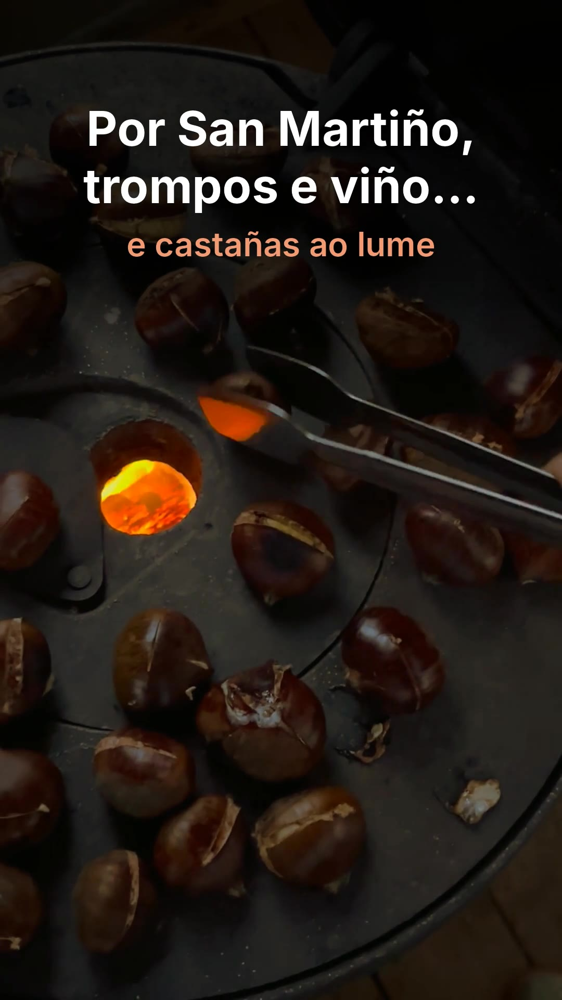

«Compartir» abre el menú del móvil: elige Instagram (Reels) para subirlo directo, o «Guardar»/Fotos para tenerlo en la galería. «Descargar» lo deja en la carpeta Descargas, que también sale en la galería.